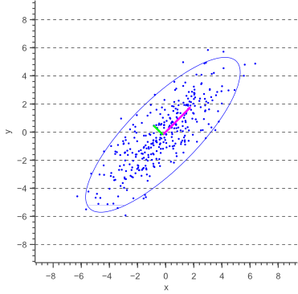

Mahalanobis-Distanz und Kovarianzellipsen
Die Mahalanobis-Distanz ist ein Maß für den Abstand eines Punkts von einem Mittelwert, das im Gegensatz zur euklidischen Distanz auch die Richtung und Streuung der Datenverteilung berücksichtigt. Sie ist besonders wichtig für multivariat normalverteilte Zufallsvariablen, bei denen die Variablen korreliert und die Skalen verschieden sein können.
Für eine Zufallsvariable \(\boldsymbol{X} \sim \mathcal{N}(\boldsymbol{\mu}, \Sigma)\) und einen Punkt \(\boldsymbol{x}\) ist die Mahalanobis-Distanz definiert als:
Diese Distanz ist dimensionslos und normiert die Abweichung entlang jeder Richtung gemäß der Varianzstruktur der Verteilung. Punkte mit gleicher Mahalanobis-Distanz liegen auf Ellipsen (2D) oder Ellipsoiden (3D) um den Erwartungswert.
Kovarianzellipsen
Die Kovarianzellipsen (in 2D) verbinden all jene Punkte, die zur multivariaten Normalverteilung eine konstante Mahalanobis-Distanz haben – sie sind also die Konfidenzbereiche.
Für eine gegebene Distanz \(d\) gilt:
Die Form und Ausrichtung der Ellipsen wird durch die Kovarianzmatrix \(\Sigma\) bestimmt: - Die Hauptachsen entsprechen den Eigenvektoren von \(\Sigma\). - Die Längen der Achsen skalieren mit den Quadratwurzeln der Eigenwerte. - Eine größere Varianz entlang einer Richtung → längere Ausdehnung der Ellipse.
Die Ellipsen mit \(d_M = 1\), \(2\), \(3\) umfassen etwa 39 %, 86 % bzw. 99 % der Wahrscheinlichkeit für eine 2D-Gaußverteilung – ähnlich wie die ±1σ-, ±2σ-, ±3σ-Regeln im eindimensionalen Fall.
Diese Ellipsen werden in den folgenden Abbildungen verwendet, um die Streuung und Form multivariater Zufallsvariablen grafisch darzustellen.
{kind=link}
Darstellung von Kovarianzellipsen
Im eindimensionalen Fall ist der 1-Sigma-Bereich keine Ellipse, sondern besteht aus zwei Punkten: Man berechnet die Standardabweichung \(\sigma = \sqrt{\sigma^2}\) aus der Varianz und erhält die Grenzen des Intervalls durch Addition und Subtraktion vom Mittelwert:
Dieser Bereich enthält bei einer Normalverteilung etwa 68 % der Wahrscheinlichkeit.
Verallgemeinert man diese Idee auf den mehrdimensionalen Fall, so möchte man ebenfalls die „Wurzel“ der Kovarianzmatrix bestimmen, um aus einem Einheitskreis (bzw. einer Einheitskugel) eine gestreckte und rotierte Ellipse (bzw. Ellipsoid) zu erzeugen, die die gleiche Streuung wie die gegebene Verteilung aufweist.
Die Matrixwurzel der Kovarianzmatrix \(\Sigma\) kann über die Cholesky-Zerlegung gebildet werden:
Dabei ist \(L\) eine untere Dreiecksmatrix, die als Transformation dient: Wenn \(\boldsymbol{z}\) eine Zufallsvariable mit \(\boldsymbol{z} \sim \mathcal{N}(0, I)\) ist, dann hat \(\boldsymbol{x} = \mu + L \boldsymbol{z}\) die Verteilung \(\mathcal{N}(\mu, \Sigma)\).
Zur Darstellung einer Kovarianzellipse geht man wie folgt vor:
Man erzeugt Punkte \(\boldsymbol{z}\) auf dem Einheitskreis, z. B. über Winkelparameter \(\theta\):
\[\begin{split}\boldsymbol{z}(\theta) = \begin{pmatrix} \cos(\theta) \\ \sin(\theta) \end{pmatrix}, \quad \theta \in [0, 2\pi)\end{split}\]Diese Punkte werden mit der Matrix \(L\) skaliert und gedreht:
\[\boldsymbol{x} = \mu + L \cdot \boldsymbol{z}(\theta)\]Das Ergebnis ist eine Ellipse, die die Struktur der Kovarianzmatrix repräsentiert.
Je nach gewähltem Skalierungsfaktor (z. B. Radius = 1, 2 oder 3) entsteht eine 1-, 2- oder 3-Sigma-Ellipse, die etwa 39 %, 86 % bzw. 99 % der Wahrscheinlichkeit einer 2D-Normalverteilung umfassen.
Diese Darstellung erlaubt eine anschauliche Visualisierung von Unsicherheiten und Korrelationen in mehrdimensionalen Verteilungen – insbesondere, wenn man die Wirkung nichtlinearer Transformationen beobachtet.
Aufgabe 1: Zeichnen einer Kovarianzellipse
In diesem Praktikum arbeiten Sie in der Datei
mahalanobis/maha.py
In dieser Aufgabe sollen Sie lernen, wie man Unsicherheit und Streuung einer zweidimensionalen, normalverteilten Zufallsvariable grafisch als Kovarianzellipse darstellen kann. Dazu implementieren Sie eine Methode, die eine gegebene 2x2-Kovarianzmatrix analysiert und auf Basis der Cholesky-Zerlegung eine entsprechende Ellipse in eine bestehende Grafik einträgt.
Die Kovarianzellipse verallgemeinert die Idee der Standardabweichung aus dem eindimensionalen Fall auf zwei Dimensionen. Sie beschreibt die Punkte gleicher Mahalanobis-Distanz (z. B. 1-Sigma) um den Erwartungswert einer 2D-Normalverteilung. Die Form und Orientierung der Ellipse wird durch die Kovarianzmatrix bestimmt.
Die „Wurzel“ der Kovarianzmatrix wird über die Cholesky-Zerlegung gebildet.
Sie können diese in NumPy mit der Methode np.linalg.cholesky berechnen.
Die Matrix \(L\) transformiert den Einheitskreis zu einer Ellipse mit derselben Streuung wie die Normalverteilung.
Implementieren Sie eine nun die Funktion maha.plot_covariance_ellipse(). Folgen Sie den
Anweisungen im Code sowie dieser Beschreibung.
- maha.plot_covariance_ellipse(mu, Sigma, ax, n_std=1.0, **kwargs)[Quellcode]
TODO: Zeichnen Sie eine Kovarianzellipse (z. B. 1-, 2- oder 3-Sigma) um den Mittelwert einer 2D-Normalverteilung. Verwenden Sie das übergebene axes Objekt zum zeichnen.
Parameter:
- munp.ndarray
2D-Vektor mit dem Mittelwert (Schwerpunkt) der Ellipse.
- Sigmanp.ndarray
2x2-Kovarianzmatrix der Verteilung.
- axmatplotlib.axes.Axes
Achse, in die die Ellipse gezeichnet werden soll.
- n_stdfloat
Skalierungsfaktor für die Ellipsenweite (z. B. 1 = 1-Sigma, 2 = 2-Sigma, …).
- **kwargs :
Zusätzliche Parameter für ax.plot, z. B. Farbe oder Linienstil.
Lösung anzeigen
def plot_covariance_ellipse(mu, Sigma, ax, n_std=1.0, **kwargs):
# TODO: Generieren Sie 100 Punkte auf dem Einheitskreis
# Verwenden Sie np.linspace um 100 verschiedene Winkel zwischen 0 und 2pi zu bekommen.
# Wenden Sie dann np.cos und np.sin an und verwenden Sie anschließend np.stack
# um daraus ein (2, N) Array zu erzeugen.
theta = np.linspace(0, 2 * np.pi, 100)
circle = np.stack((np.cos(theta), np.sin(theta))) # Shape: (2, N)
# TODO: Bestimmen Sie die Cholesky-Zerlegung der Kovarianzmatrix Sigma
# L @ L.T
L = np.linalg.cholesky(Sigma)
# TODO: Transformieren Sie den Einheitskreises in eine entsprechende Ellipse
# Multiplizieren Sie mit n_std um die Ellipse zu skalieren.
# Stellen Sie sicher das die Ellipse um den Mittelwert mu zentriert ist.
ellipse = mu.reshape(2, 1) + n_std * L @ circle
# Zeichnen Sie die Ellipse in das übergebene ax Objekt.
# Übergeben Sie die zusätzlichen Parameter in kwargs um das Aussehen der Ellipse
# beim Aufruf der Methode steuern zu können.
ax.plot(ellipse[0], ellipse[1], **kwargs)
Ändern Sie die Kovarianzmatrix, um zu untersuchen, wie sich Form und Ausrichtung der Ellipsen verändern.